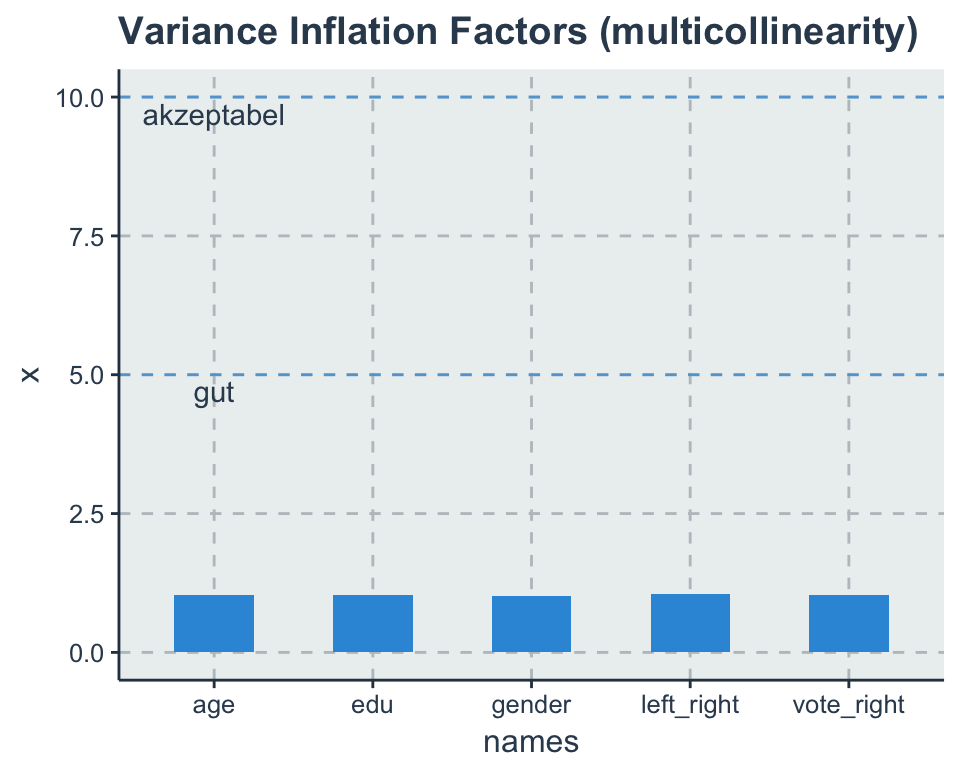
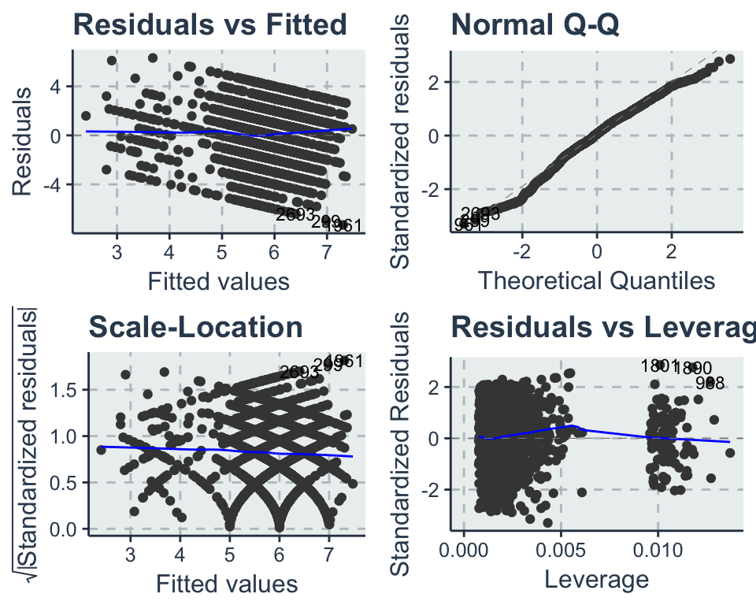
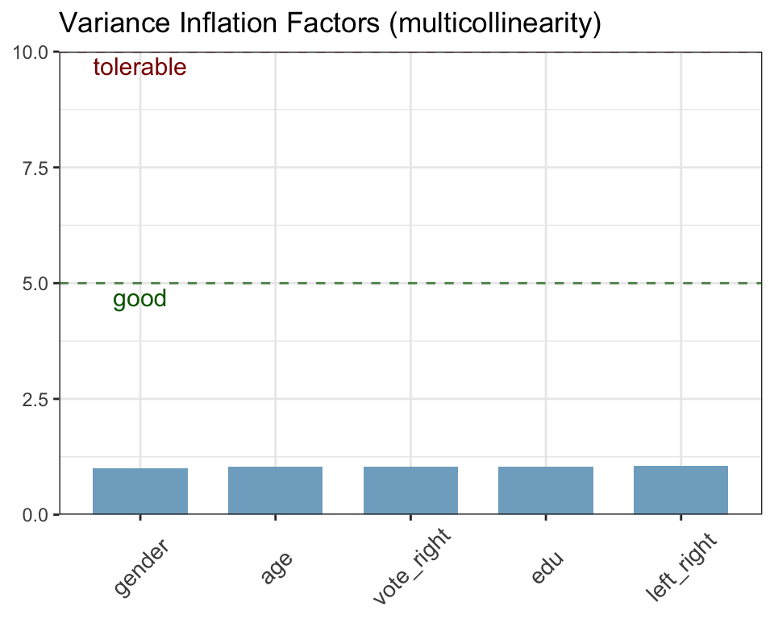
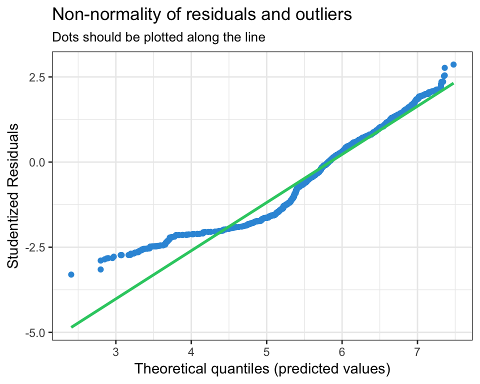

6 Modelldiagnose
# load data
load(url('https://github.com/systats/workshop_data_science/raw/master/Rnotebook/data/ess_workshop.Rdata'))
# filter data
library(dplyr)
ess_ger <- ess %>%
dplyr::filter(country == "DE") %>%
mutate(age2 = age*age)
fit0 <- lm(imm_econ ~ 1, data = ess_ger)
fit1 <- lm(imm_econ ~ left_right + vote_right, data = ess_ger)
fit2 <- lm(imm_econ ~ left_right + vote_right + edu + age + gender, data = ess_ger)Im folgenden werden drei potentiellen Spezifikationsprobleme eines Regressionsmodells aufgedeckt. Dazu wird zuerst eine Residuenanalyse durchegführt, die für die Validität der Signifikanztests unablässig ist und immer dokumentiert werden sollte. Des Weiteren werden test zu Multikolinearität der Prädiktoren und Ausreißer-Strategien vorgestellt.
6.1 Residuenanalyse
Eine Residuenanalyse dient dazu Modellannahmen statistischer Methoden bezüglich der Verteilung der Daten zu überprüfen. Damit soll die Validität und Reliabilität der Ergebnisse sichergestellt werden. Wenn alle Annahmen erfüllt sind, ist die Parameterschätzung effizient unter allen linearen, unverzerrten Schätzern was auch Best Linear Unbiased Estimator (BLUE, Gauß-Markov-Theorem) genannt wird (Urban and Mayerl 2011: 120). Wenn hingegen eine eindeutige Annahmenverletzung vorliegt sind die Parameter verzerrt und können nicht interpretiert werden.
Zur Prüfung der Modellannahmen werden neben formalen Tests verstärkt Visualisierungen genutzt. So werden Modellierungsprobleme entdeckt und verbessert. Die Chancen der Modell-Verbesserung wahrzunehmen, entspricht der Grundhaltung der explorativen Datenanalyse ethz statistics. Es geht hier nicht um präzise mathematische Aussagen, Optimalität von statistischen Verfahren oder um Signifikanz, sondern um Methoden zum kreativen Entwickeln von Modellen, die die Daten gut beschreiben. Je nach Lektüre werden 3 - 10 Modellannahmen angegeben, wobei manchmal auch Multikolinearität und Ausreißer dazu gezählt werden, welche hier separat behandelt werden. Die folgenden vier Annahmen sollten getestet werden:
- Linearität der Parameter
- Unabhängigkeit der Residuen
- Homoskedastizität
- Normalverteilung der Residuen:
Alle benötigten Informationen können mit augment vom broom package extrahiert werden.
results <- augment(fit2, ess_ger)6.1.1 Linearität der Parameter
The most important mathematical assumption of LM is that its deterministic components is a linear function of the seperate predictors: \(y = \beta_1 x_1 + \beta_2 x_2 + ...\) (Gelman and Hill 2007: 45). Die Lineare Regression schätzt die \(\beta\) Parameter intrinsisch linear (Urban and Mayerl 2011: 207). Nicht lineare Assoziationen sind ohne zusätzliche Spezifikationen nicht erfassbar. Allerdings wird jeder Parameter separat (partiell) geschätzt (Additivität), wodurch die x-Variablen nicht-linear transformiert und trotzdem die Parameter linear interpretiert werden können (Urban and Mayerl 2011: 211).
ggplot(results, aes(left_right, imm_econ)) + # aes(x, y)
geom_jitter(alpha = .1) +
geom_smooth(method = "lm", se = F) +
geom_smooth(method = "loess", se = F, color = "blue")
ggplot(results, aes(edu, imm_econ)) + # aes(x, y)
geom_jitter(alpha = .1) +
geom_smooth(method = "lm", se = F) +
geom_smooth(method = "loess", se = F, color = "blue") Die blaue Linie zeigt den linearen Zusammenhang zwischen x und y. Durch method = "lm" kann das einfach dargestellt werden. Die Steigungen der gezeigten Regressionsgeraden entsprechen den geschätzten Parametern. Zusätzlich kann durch method = "loess" (rot) eine robuste Glättungsmethode eingesetzt werden, die auch nicht-lineare Tendenzen identifiziert und Ausreißer ignoriert. Das Streudiagramm für engage_soc und gov_cens zeigt einen eindeutig positiv, linearen Zusammenhang an. Zwar weißt die loess Funktion des rechten Streudiagramms für pol_stability auf eine nicht-linearen Zusammenhang hin, doch immerhin stellt die Regressionsgerade eine gute Approximation dar.
6.1.2 Unabhängigkeit der Residuen
Sind die unbeobachteten Fehler \(\varepsilon_i\) unabhängig und unkorreliert zu x geschätzt (Gelman and Hill 2007: 46)? Zwar ist der bedingte Erwartungswert zwischen Prädikatoren und den Residuen per (OLS) Definition Null, dennoch sollte diese Annahme getestet werden, da durch Spezifikationsfehler z.B. Autokorrelation1 oder omitted variable bias die Standardfehler falsch geschätzt werden könnten.
\[cov(x_i,\varepsilon_i) = 0\]
Um die Unabhängigkeit der Residuen zu testen, wird für jede Variable separat ein eigens Streudiagramm erstellt. Diese werden dann nach auffälligen Datenmustern (Korrelationen) untersucht. Wieder kommt neben lm auch loess zum Einsatz.
ggplot(data = results, aes(x = left_right, y = .resid)) +
geom_jitter(alpha = .1) +
geom_smooth(method = "lm", se = F) +
geom_smooth(method = "loess", se = F)
ggplot(data = results, aes(x = edu, y = .resid)) +
geom_jitter(alpha = .1) +
geom_smooth(method = "lm", se = F) +
geom_smooth(method = "loess", se = F) Die blaue Linie symbolisiert die Regressionsgerade und darum streuen die unstandardisierten Residuen. Die Kernstreuung der Residuen (exklusive Ausreißer) scheint für beide Variablen unkorreliert zu sein. Neben einigen wenigen Ausreißern scheint keine der Variablen eine systematische Korrelation zu den Residuen zu besitzen.
6.1.2.1 Omitted Variable Bias
Doch was passiert wenn eine wichtige Variable/ Erklräungsfaktor vergessen wird? Die Fehlspezifikation führt zu einer Verzerrung der anderen Parameter. Diese Verzerrung wird als OVB bezeichnet. Angenommen man möchte die Stabilität in Autokratien erklären, so ist Repression ein guter Erklärungsfaktor.
\[Stabilität_i = \beta_0 + \beta_1 Repression_i + \varepsilon_i\]
Allerdings sicherlich nicht der Einzige. Sicherlich spielen Legitimität, ökonomische Performanz etc. auch eine große Rolle. Angenommen, das wahre Modell sei gegeben durch zwei Prädiktoren:
\[y_i = \beta_0 + \beta_1 x_{1i} + \beta_2 x_{2i} + \varepsilon_i\] Durch eine Fehlspezifikation betrachten wir aber das Modell mit nur einer unabhängigen Variable, d.h. \(x_{2i}\) ist unbeobachtet und damit eine so genannte omitted variable:
\[y_i = \beta_0 + \beta_1 x_{1i} + \tilde \varepsilon_i\]
Der Fehlerterm \(\tilde \varepsilon_i = \beta_2 x_{2i} + \varepsilon_i\) beinhaltet nun den unbeobachteten Faktor.
\[\hat \beta_1 = \beta_{1}^* + \frac{\sum^N_{i=1} (x_{1i}-\bar x_1) \varepsilon_i}{\sum^N_{i=1} (x_{1i}-\bar x_1)^2} = \beta_{\text{true}} + 0\]
Da Gauss-Markov: \(E(x_i|\varepsilon_i) = 0\) Unäbhängigkeit der Residuen fordert, welche nicht mehr gegeben ist, folgt \(E[x_{1i}|\beta_2 x_{2i} + \varepsilon_i] \neq 0\).
\[\hat \beta_1 = \beta_{1}^* + \frac{\sum^N_{i=1} (x_{1i}-\bar x_1) (\beta_2 x_{2i} + \varepsilon_i)}{s_{x_1}^2}\]
Der Erwartungswert
\[E[\hat \beta_1] \rightarrow^p \beta_{1}^* + \beta_2 \frac{cov(x_{1}, x_{2})}{\sigma_{x_1}^2}\] \[E[\hat \beta_1] = \beta_{1}^* + \beta_2 \text{bias}^2\] \[E[\hat \beta_1] \neq \beta_{1}^*\]
Das Problem liegt nun darin, dass wenn \(x_1\) und \(x_2\) korreliert sind.
6.1.3 Homoskedastizität
Die Fehlervarianz \(\varepsilon_i\) ist homoskedatisch, wenn die Residuen zufällig, gleichverteilt um \(\hat y\) streuen (Gelman and Hill 2007: 46). Varianzhomogenität besagt, dass die Fehlerstreuung über alle Beobachtungen hinweg identisch verteilt ist (Urban and Mayerl 2011: 242). Damit wird jedem Fehler das gleich Gewicht zugeschrieben \(\varepsilon_i = (y_i-\hat y)^2\).
\[var(\varepsilon_i)=\sigma^2\]
Wenn diese Annahme verletzt ist spricht man von Heteroskedatiszität, wodurch zwar die \(\beta\) Parameter unverzerrt geschätzt werden, allerdings die Standardfehler \(SE(\beta_1)\) unter- oder überschätzt (under-, overestimated) werden (Urban and Mayerl 2011: 243). Unterschätzung der Standardfehler führt zu erhöhtem Type I Error \(\alpha\) (also \(H_0\) wird zu häufig verworfen) und eine Unterschätzung reduziert die statistische Power (weniger Teststärke führt zu: \(H_0\) wird zu häufig angenommen). Während heteroskedastischen Residuen die Parameter nicht beeinflussen, können die Signifikanztest durch die Verzerrung nicht mehr interpretiert werden. Lösungen:
- die y-Variable transformiert werden
- neue Variablen ins Modell aufnehmen (omitted variables, Dummies erstellen für jede Varianzgruppe)
- Robust Huber-White Sandwiche estimator um ungleiche Varianzen zu schätzen (see package ‘sandwich’ Lumley and Zeileis 2015) oder
- geeignete Panel oder Multilevel Modelle (Gelman and Hill 2007).
results %>%
ggplot(aes(.fitted, .std.resid)) +
geom_point() +
geom_smooth(se = F, color = "red") +
geom_hline(yintercept = 0, color = "blue") +
geom_hline(aes(yintercept = - sd(.std.resid)), linetype = 2) +
geom_hline(aes(yintercept = sd(.std.resid)), linetype = 2) +
ggtitle("Standardized Residuals vs Fitted")
ggplot(results, aes(.fitted, sqrt(.std.resid))) +
geom_jitter() +
geom_smooth(se = FALSE, color = "red") +
ggtitle("Scale-Location")Auf der x-Achse wurden die geschätzten Werte (\(\hat y_i = \beta_0 + \beta_1x_i\)) und auf der y-Achse die unstandardisierten Residuen abgetragen. Die zwei gestrichelten, horizontalen Linien umfassen 68,3% der Fälle und unterstützen dabei die Kernstreuung visuell zu identifizieren. Abgesehen von ein paar wenigen Ausreißern streuen die Residuen gleichverteilt um die Vorhersage.
Zur abschließenden Klarheit kann ein Levene-Test durchgeführt werden (Urban and Mayerl 2011: 248), dessen Nullhypothese lautet H0: die Varianzunterschiede zwischen den betrachteten Gruppen sind gleich Null. Zur Durchführung des Levine-Tests muss eine Gruppenvariable erstellt werden, welche die visuell inspizierten Varianzgruppen in einem Vektor repräsentieren. Wird der Test signifikant (\(p<0.05^*\)) ist die Annahme verletzt und man sollte zu Methoden zur robusten Schätzung der Standardfehler (SE) greifen.
Alternativ kann eine weitere Regression getestet werden um einen Trend der Residuen zu identifizieren.
lm(abs(residuals(fit2))~fitted(fit2)) %>%
summary##
## Call:
## lm(formula = abs(residuals(fit2)) ~ fitted(fit2))
##
## Residuals:
## Min 1Q Median 3Q Max
## -1.9948 -1.0563 -0.2796 0.7667 5.6979
##
## Coefficients:
## Estimate Std. Error t value Pr(>|t|)
## (Intercept) 2.40650 0.21908 10.98 < 2e-16 ***
## fitted(fit2) -0.10878 0.03726 -2.92 0.00353 **
## ---
## Signif. codes: 0 '***' 0.001 '**' 0.01 '*' 0.05 '.' 0.1 ' ' 1
##
## Residual standard error: 1.335 on 2719 degrees of freedom
## Multiple R-squared: 0.003125, Adjusted R-squared: 0.002759
## F-statistic: 8.525 on 1 and 2719 DF, p-value: 0.0035326.1.3.1 Gewichtete lineare Regression
Die Varianzen der einzelnen Zufallsfehler, die wir mit \(\sigma_i^2 = \sum \varepsilon_i^2\) bezeichnen wollen, sollen nun nicht mehr als gleich \(\sigma^2\) vorausgesetzt werden. Dann ist es sicher sinnvoll, den Beobachtungen mit kleinerer Zufallsstreuung, also den präziseren Beobachtungen, in der Regressionsrechnung grösseres Gewicht zu geben. Statt der gewöhnlichen Quadratsumme SSQ(E) kann man eine gewichtete Version davon, \(\sum w_iR^2_i\), minimieren. Die Gewichte \(w_i\) sollen für steigende \(\sigma_i\) fallen. Nach dem Prinzip der Maximalen Likelihood ist \(w_i = 1/\sigma^2_i\) optimal.
6.1.4 Normalverteilung der Residuen
Die Normalverteilung der Residuen is the generally the least important assumption (Gelman and Hill 2007: 46). Die Schätzung der \(\beta\) Parameter ist davon überhaupt nicht beeinflusst. Die Signifikanz welche auf asymptotisch, normal verteilten Zufallsvariablen beruht hingegen schon (Urban and Mayerl 2011: 193).
\[\varepsilon_i \sim N(0, \sigma^2)\]
Sollte ein Modell alle Annahmen erfüllen, spricht man von independent and identically distributed errors (iid). Anders formuliert - konsistente, erwartungstreue und normal verteilte Fehler.
\[\varepsilon_i \stackrel{iid}{\sim} N(0, \sigma^2)\]
ggplot(data = results, aes(.std.resid)) +
geom_histogram(aes(y = ..density..)) +
stat_function(fun = dnorm, lwd = 1, col = 'red') +
ggtitle("Standardnormalverteilung der Residuen")
ggplot(data = results, aes(sample = .std.resid)) +
stat_qq() +
geom_abline(colour = "red") +
ggtitle("Q-Q Plot")Das kann mit einer einfachen Häufigkeitsverteilung der Residuen visuell eingeschätzt werden. Folgt die empirische Verteilung (schwarz) der theoretischen Normalverteilung (rot)? Die Residuen streuen annähernd normal verteilt um 0 mit einer konstanten Varianz. Beim Q-Q-Plot sollten die Punkte so nahe wie möglich an der roten Linie liegen. Abgesehen von ein paar Ausreißern am Ende der Verteilung sind die annähernd Residuen normal verteilt.
6.2 Multikolinearität
(Multi-) Kollinearität beschreibt wie stark zwei (oder mehrere) unabhängige x-Variablen linear voneinander abhängig sind (Urban and Mayerl 2011: 225). Eine schwache bis mittlere Korrelation zwischen den x-Variablen ist unproblematisch, da das statistische Modell die Parameter isoliert schätzt. Problematisch hingegen wird es, wenn starke bis perfekte ML vorliegt, da die Standardfehler der parameter überschätzt und die wahren Effekte jeder einzelnen Variablen nicht mehr identifiziert werden können. Der gemeinsame Informationsanteil zweier Variablen kann durch eine Hilfregression definiert werden
\[x_{i1} = \gamma_1 x_{i2} + r_i\]
Schätze \(\gamma_1\) mit OLS und berechne die Residuen
\[\hat r_i = x_{i1} - \gamma_1 x_{i2}\]
Der SChätzer \(\hat \beta_1\) ist dann
\[\hat \beta_1 = \frac{\sum^N_{i=1} \hat r_i y_i}{\sum^N_{i=1} \hat r_i^2}\]
In einer multivariaten Regression wird nur der Teil der Variation von \(x_1\) genutzt, die nicht mit \(x_2\) korreliert ist um den Parameter zu identifizieren. Wir schätzen den Effekt von \(x_1\) auf \(y\), nachdem wir den Einfluss von \(x_2\) auf \(x_1\) herausgerechnet haben (partialled out).
Gründe für starke oder perfekte ML:
- Eine Lineartransformation eines Prädiktors (z.B. Zensur und Zensur100 = 100 × Zensur)
- Ein aus anderen Prädiktoren abgeleiteter Faktor (z.B. ES = 1 − EL)
- Ein konstanter Prädiktor (kollinear zum Intercept)
- Berücksichtigung aller Merkmalsausprägungen einer qualitativen Variable (z.B. Geschlecht) als Dummyvariablen ohne Verwendung einer Referenzkategorie
Was gilt nun aber als starke Multikolinearität? Alle Prädiktoren sind üblicherweise mehr oder weniger korreliert, so dass eine gewisse (aber nicht starke oder perfekte) Multikollinearität vorliegt. Dies ist ja gerade der Grund dafür, Kontrollvariablen aufzunehmen. Je stärker jedoch die Abhängigkeit zwischen den x-Variablen, desto schwieriger wird die Schätzung ihres isolierten Einflusses auf y.
Eine Möglichkeit Kolinearität zu identifizieren ist eine bivariate Korrelationstabelle auf Koeffizienten größer 0.8 zu untersuchen. Allerdings wird so nur jedes Variablenpaar getrennt betrachtet. Soll hingegen Multikolinearität untersucht werden, kommt der Toleranz-Test zum Einsatz, welcher den speraten Erklärungsbeitrag jeder X- Variablen nach Kontrolle der übrigen Variablen berechnet (c.p) (Urban and Mayerl 2011: 231).
\[T_p = 1−R_{x_p|x_{-p}}^2\]
Ein Wert von kleiner 0.2 deutet auf eine starke Multikollinearität hin (lediglich ein Fünftel eigene Varianz). Werte nahe 0 implizieren, dass die jeweilige \(x_k\)-Variable nur noch sehr wenig eigene Erklärungsanteile erbringt bzw. umgekehrt. Liegen viele niedrige Toleranzwerte vor, sollten Stabilitätstests durchgeführt werden.
Häufiger jedoch wird der Variance Inflation Factor berechnet, der auf die Logik der Toleranz zurückgreift, allerdings eine bessere Interpretation bietet.
\[VIF(\hat \beta_p)= \frac{1}{T_p} = \frac{1}{(1-R_{x_p|x_{-p}}^2)}\]
Je größer der VI-Faktor einer Variablen p, desto stärker sind die Hinweise auf Multikollinearität. Als Daumenregel werden häufig VIF-Werte von über 10 als zu hoch eingestuft. Andere sehen \(VIF_p > 5\) schon zu hoch, da die die Erklärungsleistung einer Variable damit \(\rightarrow 1/0.2\) unter 20% fällt (Urban and Mayerl 2011: 232).
library(car)
car::vif(fit2)## left_right vote_right edu age gender
## 1.052135 1.041137 1.041530 1.034396 1.011314vif_data <- tidy(vif(fit2))
vif_data %>%
ggplot(aes(names, x)) +
geom_bar(stat = "identity", width = 0.5) +
geom_hline(yintercept = 5, linetype = 2, alpha = 0.7) +
geom_hline(yintercept = 10, linetype = 2, alpha = 0.7) +
annotate("text", x = 1, y = 4.7, label = "gut") +
annotate("text", x = 1, y = 9.7, label = "akzeptabel") +
ggtitle("Variance Inflation Factors (multicollinearity)") 
Die VIF-Werte werden wie das \(R^2\) direkt durch den Stichprobenumfang und die Stichprobenvarianz beeinflusst (O’brien 2007). Außerdem steigt natürlich mit der Anzahl der Prädiktoren auch die Wahrscheinlichkeit Multikolinearität zu erhalten. Wenn hohe VIF Werte vorliegen stehen mindestens diese Optionen zur Verfügung:
- entferne die problematische(n) Variable(n).
- komprimiere hoch korrelierten Variablen in eine Dimension (additiven/multiplikativer Index, PCA, EFA)
6.3 Ausreißer
OLS minimiert die quadratischen Residuen \(\sum \varepsilon_i^2\). Dadurch können Ausreißer die Regressionsgerade sensible beeinflussen, was nach Ausschluss der extremen Werte zu signifikant verschiedenen Ergebnissen führen kann. Ausreißer können Messfehler oder einfach nur extreme Ausprägungen darstellen. Darum sollte transparent dokumentiert werden, wie stabil die Ergebnisse vor und nach dem Ausschluss sind.
results %>%
arrange(.cooksd) %>%
mutate(row_id = 1:n()) %>%
select(row_id, .fitted, .resid) %>%
top_n(5)## row_id .fitted .resid
## 1 2701 4.776867 5.223133
## 2 2712 4.412014 5.587986
## 3 2713 4.368222 5.631778
## 4 2720 3.681296 6.318704
## 5 2721 2.898986 6.101014# Points size reflecting Cook's distance
ggplot(data = results, aes(x = .fitted, y = .resid, size = .cooksd)) +
geom_hline(yintercept = 0, colour = "firebrick3") +
geom_point(alpha = .5) +
geom_text(aes(label = rownames(results))) +
scale_size_area("Cook’s distance")jacknife & bootstrap: both test and solution
6.4 Beipsiel

Die oben einzeln vorgestellten Konzepte zur Residuenanalyse werden beispielhaft mit dem sjPlot package durchgeführt. Mit dem Argument type = "ma" für model assessment können alle Modellannahmen getestet werden. ACHTUNG: Die Anforderungen in deinem Kurs können von dieser praktischen Vorgehensweise abweichen.
library(ggfortify)
autoplot(fit2, ncol = 2, label.size = 3) #which = 1:6
library(sjPlot)
fit2_ma <- sjp.lm(fit2, type = "ma")## NULL
Die erste Tabelle zeigt die Modellgüte für das ursprüngliche Model (original) in Form von \(R^2\) and AIC. Darunter wird die Modellgüte für das aktualisierte Modell (updated) berichtet, welches automatisch die folgenden Ausreißer identifiziert, ausgeschlossen und das Regressionsmodel neu berechnet hat:
fit2_ma$outlierDie Unterschiede sind verschwindend gering, dennoch werden die Ausreißer ausgeschlossen (nicht notwendig)
no_outliers <- ess_ger[ - fit2_ma$outlier, ] # Zwei Ausreißer entferntAls nächstes wird das statistische Modell auf Multikolinearität untersucht. Der Variance Inflation Factor für beide x-Variablen ist weit unter der geforderten Grenzwerten. Das statistische Modell hat damit keine Probleme mit zu hoch korrelierten Variablen.
Nun werden die BLUE Annahmen getestet. Die Residuen folgen der theoretischen Normalverteilung (QQ-Plot) und nur die angegeben Ausreißer weichen signifikant davon ab. Auch das Histogram unterstützt die Annahme von normal verteilten Fehlern \(\varepsilon_i \sim N(0, \sigma^2)\).
Zuletzt wird die Streuung der Residuen betrachtet. Die Residuen streuen homoskedastisch um die Vorhersage und keine Muster sind identifizierbar. Damit sind die Annahmen \(\sum \varepsilon^2 = \sigma^2\) und \(cov(x_i, \varepsilon_i) = 0\) erfüllt und die Parameter, sowie Signifikanztest können interpretiert werden.